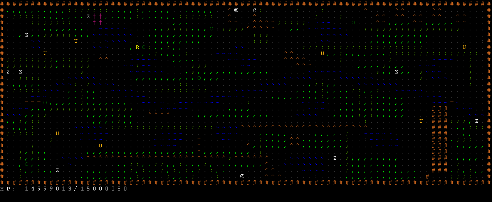
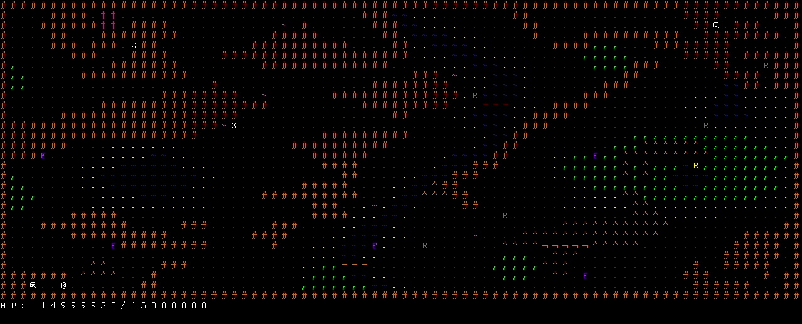
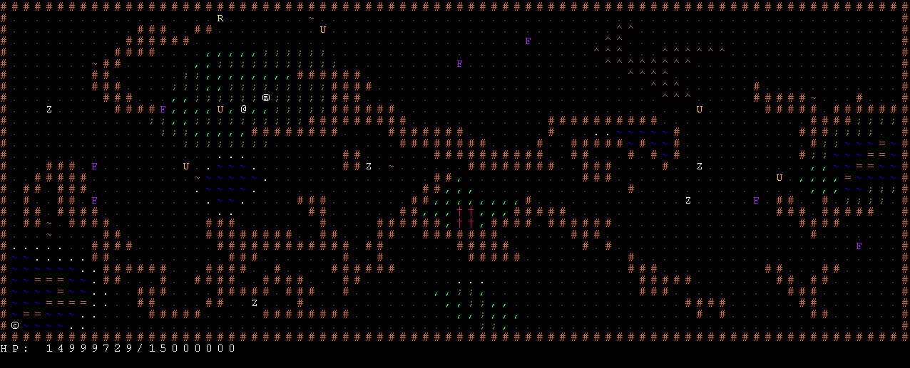
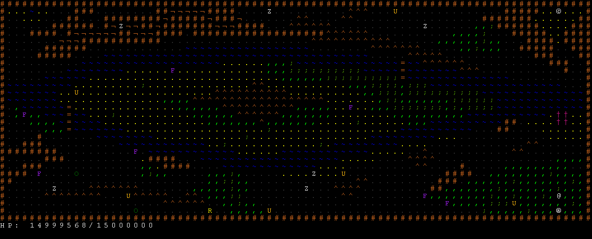
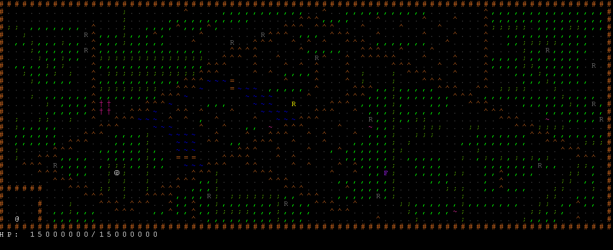

Adventure at Umalu ist ein rogue-like Dungeon-crawler Spiel, geschrieben in Java. Es wurde im Zuge des Sofwarepraktikum-Kurses 2013 des Instituts für Informatik der Freien Universität Berlin von
entwickelt. Adventure at Umalu verwendet die jade-rogue Library von Jeffrey Lund.
Adventure at Umalu besteht aus zwei Spielen:
|  | |
|  |  |
|  |  |
Es gibt die folgenden Möglichkeiten um Adventures oder Running in Umalu zu spielen:
java -jar adventure-of-umalu.jar
java -jar adventure-of-umalu.jar speedrun
git clone https://github.com/26thmeusoc/adventure-of-umalu.git adventure-of-umalu
cd adventure-of-umalu/src
javac rogue/Rogue.java
java rogue/Rogue
java rogue/Rogue speedrun
Die wichtigesten Tasten:
| Taste | Aktion | Taste | Aktion | |
|---|---|---|---|---|
w | Schritt nach oben (Norden) | q | Schritt nach Nordwesten | |
s,x | Schritt nach unten (Süden) | e | Schritt nach Nordosten | |
a | Schritt nach links (Westen) | y | Schritt nach Südwesten | |
d | Schritt nach rechts (Osten) | c | Schritt nach Südwesten | |
h | Eventlog aufrufen | o | Hilfe aufrufen |
Weitere Informationen unter: Hilfe
Die Quelltextdokumentationen zum Projekt sind verfügbar unter Adventure at Umalu Dokumentation